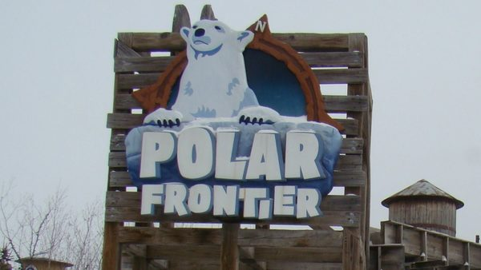

Polar Frontier, Columbus Zoo
Columbus Zoo & Aquarium · Photo Tour #6

Photo Tours #6, Polar Frontier-Columbus Zoo & Aquarium. In 2010, Columbus Zoo opened to a extension to the former North America Region ( Now Called North America Trek & Opening in Late June, 2025 ) today this 5 Acre Grassy & Forested Tundra is home to 3 Species,
When you enter the Abandoned Mining Town you walk and past the Chicken Coop ( really delicious chicken, I recommended lol ) you will take a left to and go inside the Ice Bear Outpost, where people can either go to the Gift shop, multiple interactive stations about Polar Bears,
look at a microscope station to look at Fur, broken claws and much more but most importantly learned about climate change which tells us what’s happening to not only glaciers around the world but also the disappearing ice from the north.
Viewing from both inside and outside you find a small shed shack in its home to the Arctic Foxes, whether they are in their winter or their summer coats and yes they are really cute, we are leaving the ice bear outpost to see the main event,
which is the main viewing of the Polar Bears ( Male-Lee & Female-Aurora ) you can see the Polar Bears from Underwater & above water as well seeing one of the biggest and natural looking Polar Bear enclosures in the Nation, Next the Ice Bears,
your next and last resident is the massive enclosure for Brothers, Brutus & Buckeye, The Rescue Alaskan Brown Bears, They were rescued in 2004 when their mom didn’t make it,
so Alaskan Fish & Game was called and brought the brothers to the Alaska Zoo first and then brought to Columbus in 2004 and they were in the Former Black Bear enclosure when they were 6 months old ( The Black Bear was moved to it’s new enclosure in North America Trek & it’s former space is now home to a Wolverine ) In 2010 the Brothers were moved to their massive home and yes like the Ice Bears,
you can see them underwater ( sort of ) and see them sleeping in their cave, This area has to be my all time favorite Northern Ice World Themed areas and if you do make it to Columbus, I can assure you, it is a must see.
Louie posted this on Facebook — open the original post →